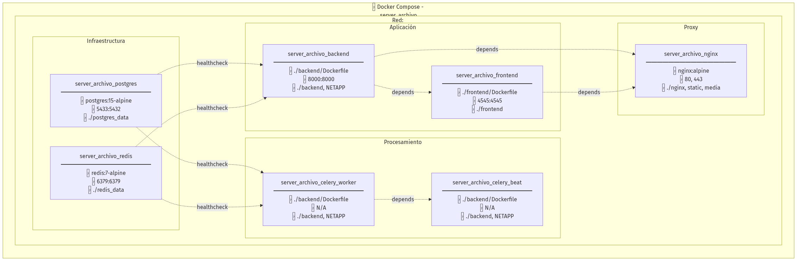
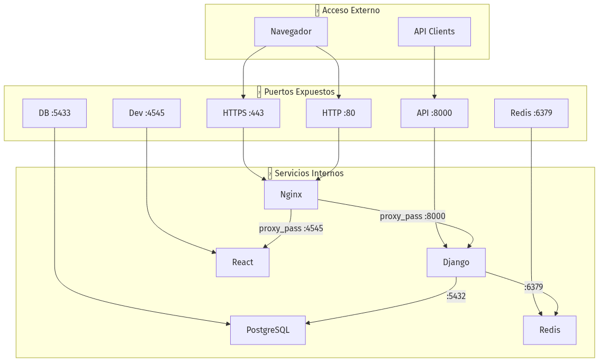
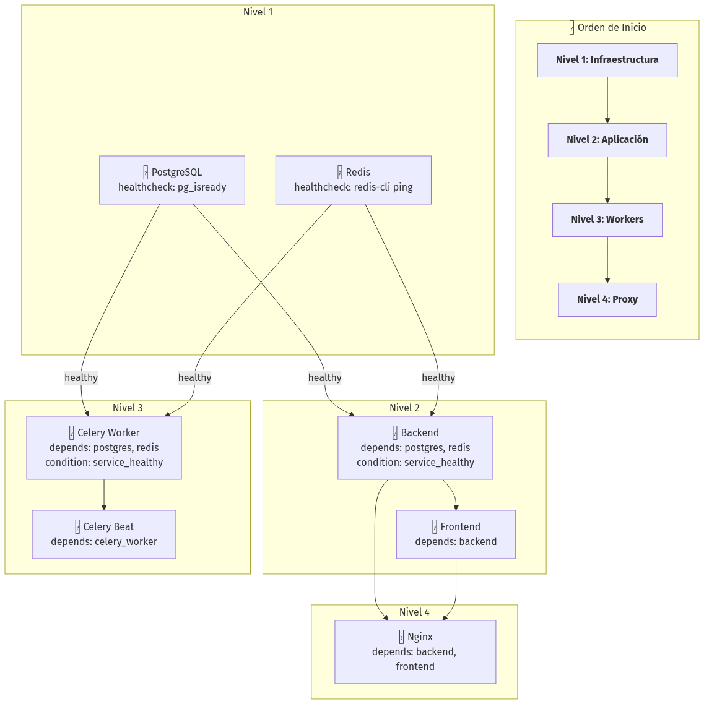
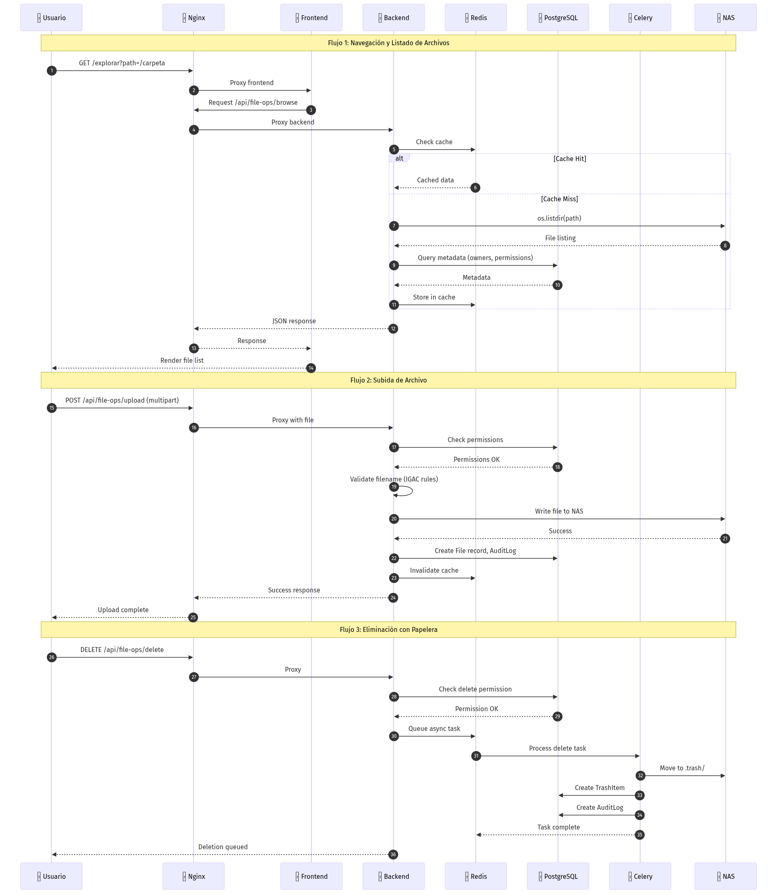

Arquitectura de Infraestructura - Sistema de Gestión de Archivos IGAC
Resumen de Infraestructura
- Orquestación: Docker Compose v3.8
- Total de Servicios: 7 contenedores
- Red: Bridge (server_archivo_network)
- Almacenamiento: PostgreSQL + Redis + NAS NetApp
- PostgreSQL con volumen persistente para datos
- Redis con AOF (Append Only File) para persistencia
- Nginx como punto único de entrada con SSL
- Celery workers pueden escalar horizontalmente
- Frontend estático servido por Nginx (cacheable)
- Backend stateless (sesiones en Redis)
- SSL/TLS termination en Nginx
- JWT para autenticación stateless
- Secrets en variables de entorno (.env)
- Rate limiting en Nginx
- Healthchecks en PostgreSQL y Redis
- Logs centralizados en Docker
- Auditoría completa en base de datos
Diagrama de Arquitectura General
Diagrama 1

Diagrama de Contenedores Docker
Diagrama 2

Diagrama de Puertos y Comunicación
Diagrama 3

Diagrama de Volúmenes y Almacenamiento
Diagrama 4

Diagrama de Dependencias de Servicios
Diagrama 5

Diagrama de Flujo de Datos
Diagrama 6

Tabla de Configuración de Servicios
Servicios de Infraestructura
| Servicio | Imagen | Puerto Ext | Puerto Int | Volúmenes | Healthcheck |
|---|---|---|---|---|---|
| PostgreSQL | postgres:15-alpine | 5433 | 5432 | ./postgres_data | pg_isready -U postgres |
| Redis | redis:7-alpine | 6379 | 6379 | ./redis_data | redis-cli ping |
Servicios de Aplicación
| Servicio | Build | Puerto Ext | Puerto Int | Volúmenes | Dependencias |
|---|---|---|---|---|---|
| Backend | ./backend/Dockerfile | 8000 | 8000 | ./backend, NETAPP | postgres(healthy), redis(healthy) |
| Frontend | ./frontend/Dockerfile | 4545 | 4545 | ./frontend | backend |
Servicios de Procesamiento
| Servicio | Build | Comando | Volúmenes | Dependencias |
|---|---|---|---|---|
| Celery Worker | ./backend/Dockerfile | celery -A config worker -l INFO | ./backend, NETAPP | postgres(healthy), redis(healthy) |
| Celery Beat | ./backend/Dockerfile | celery -A config beat -l INFO | ./backend, NETAPP | celery_worker |
Servicios de Proxy
| Servicio | Imagen | Puertos | Volúmenes | Dependencias |
|---|---|---|---|---|
| Nginx | nginx:alpine | 80, 443 | ./nginx, static, media, dist | backend, frontend |
Variables de Entorno Críticas
Base de Datos
``env
POSTGRES_DB=gestion_archivo_db
POSTGRES_USER=postgres
POSTGRES_PASSWORD=**
POSTGRES_HOST=postgres
POSTGRES_PORT=5432
`
Redis/Celery
`env
REDIS_HOST=redis
REDIS_PORT=6379
CELERY_BROKER_URL=redis://redis:6379/2
CELERY_RESULT_BACKEND=redis://redis:6379/2
`
Django
`env
DEBUG=False
DJANGO_SECRET_KEY=**
ALLOWED_HOSTS=localhost,127.0.0.1,gestionarchivo.igac.gov.co
JWT_SECRET_KEY=**
`
Almacenamiento NAS
`env
NETAPP_BASE_PATH=/mnt/repositorio/2510SP/H_Informacion_Consulta/Sub_Proy
SMB_SERVER=172.21.54.24
SMB_SHARE=DirGesCat
TRASH_PATH=04_bk/bk_temp_subproy/.trash
MESSAGE_ATTACHMENTS_PATH=04_bk/trans_doc_platform/message_attachments
`
Servicios Externos
`env
GROQ_MODEL=llama-3.3-70b-versatile
EMAIL_HOST=smtp.gmail.com
EMAIL_PORT=587
DOMAIN=gestionarchivo.igac.gov.co
``
Notas de Implementación
Alta Disponibilidad
Escalabilidad
Seguridad